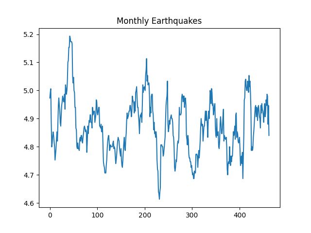

Week 6
"BBC World News banned in mainland China for 'content violation'"
We’re proud to be a part of a newly launched European consortium for the standardization of #fuelcell modules for heavy-duty applications: https://t.co/sfN2GJ1fr3
— Nuvera Fuel Cells (@NuveraH2) February 11, 2021
Didnt GOOG fight Australian gov for a similar request?
I guess that was broader in scope.. Make'm pay, who cares.. 3W tech cannot create its social structures yet, is mostly effin shit up not building, well, at least contribute something to the modern world (2W) in cold hard cash.
"Google announced Wednesday it has launched its News Showcase product in the U.K., meaning the tech giant will now pay for news content in the country for the first time"
"Indian government to make four-day working week a possibility for 1.3 billion people"
Starting with intra- makes sense, due to potential reduced range (the best any renewable can offer), but improvements can be worked on while the rest of the system is being established.
👍 👍 👍
"Decarbonization Roadmap for EU.. 60 MtCO2 [reduction] by hydrogen-powered aircraft on intra-European routes"
Yes, good term to know; if fossil is used to produce H2 but carbon is captured, it is blue H2. If not, it is gray.
We all prefer green H2 of course.
Jack Brouwer of UCI sounds like a champ; he's been at the renewable fuel concept for a long time. Wrote a white paper on pipe transmission, SoCalGas noticed and they launched a pilot project based on it, years ago.
More Wilshire crazyness. This thing keeps going up and up..
2021-02-10 195.87
Perusing some Fukuyama found one error already: ".. [they reasoned] development of human societies from simple tribal ones based on slavery and subsistence agriculture".
Conflating slavery, tribes, and subsistence agro.. Wrong. Tribes can occur pre. Slavery can only happen during agro, not before that.
Fundam phy community tries too hard to live up to achievements of prev generations, radio, elec, nuclear fission, etc, and see newer sciences gaining on them (eg biosciences), and think they have to 'go sexy' to remain relevant, plays on determinism, time, multip unvierses, etc. But that's trying to jump ahead with shaky ground underneath .. They dont even know what the Sun is made of.. how can they reason about the origin of the universe?
:) Finkel with a Lavo canister..
Delighted to host members of the diplomatic corps in @dfat to hear from Dr Alan Finkel AO and James White on Australia’s electricity transition, hydrogen and low emissions technology stretch goals. Thanks to #LAVO for the loan of a H2 storage cylinder too! pic.twitter.com/JeY7hvPazA
— Ambassador for the Environment (@AusAmbEnviro) February 11, 2021
😆
The Middle. Of the slammer.
"Jeep pulls Springsteen ad after DWI arrest reports"
There is much wisdom in population models. I talked abt widespread deaths ~10 yrs ago. Logistic eqn models deaths proportional to ppl interactions (implying rush towards same resources can kill). A pandemic is similar, ppl interaction causes deaths.
"Hyzon SPAC Merger Includes $400 Million Investment"
"@SunHydrogen
The trajectory of #greenhydrogen production is moving much faster than expected as the project pipeline has grown ninefold since October 2019 to an astonishing 26 gigawatts"
"[T]he Government of Canada ... has identified hydrogen as a critical part of its path towards achieving the goal of net-zero carbon emissions by 2050, affirming that the development of low-carbon hydrogen is a strategic priority for Canada over the next 30 years. This ambitious strategic blueprint for the development of the hydrogen economy seeks to position Canada as a world leading exporter of hydrogen by 2050. The Strategy outlines Canadian specific business opportunities and challenges, recommends the use of a mix of feedstocks (water, natural gas, petroleum, biomass), as well as industrial by-products available in various regions of Canada to produce hydrogen"
Four companies - @Shell, @MHI_Group, @VattenfallGroup and #WärmeHamburg - have revealed their joint plans for one of #Europe's largest electrolysis plants that will produce 🟢 #greenhydrogen from wind 💨 and solar energy. ☀️#HydrogenNow @HydrogenHub https://t.co/PY6adE6FvT
— Hydrogen Europe (@H2Europe) February 3, 2021
I'll go with \nu
Is that a \nu or \upsilon?
Denmark has decided to construct the world’s first windenergy hub as an artificial island in the North Sea #dkgreen pic.twitter.com/lKrxmWV61q
— Dan Jørgensen (@DanJoergensen) February 4, 2021
So it is likely covid came from lab, not animal
Reshare, Feb 2020: "According to Professor Luc Montagnier, winner of the Nobel Prize for Medicine in 2008 for discovering HIV as the cause of the AIDS epidemic together with Françoise Barré-Sinoussi, the SARS-CoV-2 is a virus that was manipulated and accidentally released from a laboratory in Wuhan... in order to insert an HIV sequence into this genome, molecular tools are needed, and that can only be done in a laboratory"
"Coronavirus Likely Came From Animal, Not Laboratory, WHO Says"
Bama admin deported over 2 mil immigrants so I guess they did some 'Si, se puede!' of their own
Carlson, Ship of Fools: "Chavez led the legendary Delano grape strike, which lasted for five years and inspired college students across the country to wear 'Boycott Grapes' pins.
Chavez’s signature rallying cry, 'Si, se puede!' ('Yes we can!'), became so famous among well-educated liberals that Barack Obama used it as a campaign slogan when he ran for president. Growing up in California, I can’t remember a year when we didn’t celebrate the life and achievements of Cesar Chavez in class. Chavez’s name is still everywhere in the state. There are six libraries, eleven parks, half a dozen major roads, and at least twenty-five public schools in California named after him, more than George Washington. That doesn’t include the many Cesar Chavez academic buildings, student centers, and at least one college. Cesar Chavez Day is a California state holiday.
Most enduring is Chavez’s 'Si, se puede!' Wherever left-wing demonstrators gather, you’ll hear it. It’s most common at pro-immigration rallies. Several times I’ve seen illegal aliens scream it while carrying Mexican flags. Every time, I say a silent prayer of thanks that Cesar Chavez is long dead. It would have been torture for him.
Cesar Chavez didn’t support illegal aliens. Chavez didn’t like immigration at all, generally, especially the low-skilled kind. Chavez understood that new arrivals from poor countries will always work for less than Americans"
"Darryl ... jumped from his chair when he saw it on TV — a bust of the civil and labor rights leader Cesar Chavez just behind President Joe Biden as he signed executive orders."
"@hazergroupltd
Masdar is launching a pilot green #hydrogen project in the United Arab Emirates"
"@bartbiebuyck
Nepal hopes to export hydrogen fuel to Europe within a decade"
"Welcome to Trump Impeachment Part II: Everyone Hates It Here"
"@H2Standard
Steel maker @thyssenkrupp successfully completed the 1st phase of #hydrogen tests on Blast Furnace 9, in Duisburg [Germany]. Now, tests w/b extended to all 28 tuyères. Next large-scale industrial use"
2014: "In a new online paper .. the 72-year-old Hawking says, 'There are no black holes — in the sense from which light can't escape to infinity.' The U-turn from Hawking, one of the pioneers of modern black hole theory, surprised his colleagues"
"A player drinking Makers Marka, cranberry vodka
Wearing a mink coat thats furry as Chewbacca" ♪♬
Three 6 Mafia - Roll With It #music
I knew it; Spectral and Outside the Wire both filmed in Budapest, Hungary, buildings looked similar.
"@TheNatlInterest
The U.S. Navy, Japan, Australia, India, Canada and Japan conducted recent exercises intended to sharpen their collective ability to find, track and potentially attack Chinese submarines in the Pacific"
CH cannot make a top-notch CPU? That cld be a problem for defense.
Quora: "China does not have any CPU that is not based on Western CPU designs, sometimes they are simply based on ancient CPU designs. They simply modify Western designs, put a Chinese part number or sometimes a Chinese name on it and make all sorts of empty claims about it... China does not have a high performance ARM CPU, they simply have an ARM CPU"
"In an all-hands meeting last year, an employee asked...Apple’s hardware chief why the company continues to build products in China given these ethical problems. The crowd cheered. 'Well, that’s above my pay grade,' he responded..."
"[In 1994] President Clinton ... announced... that he has decided to 'de-link' China’s privileged trading status from its human rights record"
Ditto for gold
"@scientificecon
Deflation is worse than inflation: modest inflation is manageable for everyone, but deflation happens when nominal GDP shrinks. That means large numbers of corporate bankruptcies. While the economists rejoice that things are cheaper for 'consumers', they can't buy as unemployed"
"Aw but that means prices go down man!" 🤨
Bitcoin is deflationary bitch
"@hyzonmotors
BREAKING
HYZON Motors to list on @Nasdaq via merger with Decarbonization Plus Acquisition Corporation, with combined equity value at $2.7 billion"
"BioNTech-Pfizer COVID vaccine effective against 2 variants"
We cld parse DJT statements all day long, but the moment you question to legitimacy of an election, and say "fight" somewhere in speech, that is opening the door to violence. People are not smart on pol nuance (completely normal), so leadership carries responsibility.
"Trump impeachment: Supporters rioted 'of their own accord'"
The H2 power paste sounds like a fantastic innovation.. shows potential rewards for betting on the right tech; if car company made investm in fuel cells, they cld still get ROI from that after a new delivery method is discovered. Power paste is just another way of providing H2 gas into the FC, replacing H2 tanks, and everything else stays the same. Indiv parts get innnovated on seperately = stronger overall architecture.
"Researchers at the Fraunhofer Institute for Manufacturing Technology and Advanced Materials IFAM in Dresden have developed a paste for hydrogen storage. The institute is calling the mass 'power paste'.
The researchers also claim their paste to offer high energy densities and be suitable for all vehicles from electric scooters to cars. According to Fraunhofer IFAM, the power paste, based on the solid magnesium hydride, should allow hydrogen to be chemically stored at room temperature and ambient pressure and rereleased as required. Since the power paste only decomposes above about 250 degrees Celsius, this works without any issues even if, for example, a scooter equipped with the paste is left in the summer sun for hours.
The storage paste’s starting material is only magnesium in powder form, which is a very common element. At 350 degrees Celsius and five to six times atmospheric pressure, this is reacted with hydrogen to form magnesium hydride. The power paste is then produced with ester and metal salt.
The power paste replaces the cylindrical pressure tank used in fuel cell cars and buses. Therefore, the institute says that this solution is suitable for hydrogen drives in smaller vehicles in cases where a pressure tank would be difficult to implement.
According to the Fraunhofer researchers, the refuelling process is straightforward. Instead of driving to a filling station, the scooter driver changes a cartridge and fills tap water into a water tank. In the vehicle itself, the paste is pressed out of the cartridge and mixed with a precisely measured amount of water, depending on the required power. This reaction produces gaseous hydrogen, which can then be converted into electricity for the electric motor.
Only half of the hydrogen comes from the power paste, the other half from the water in the reaction. 'The energy storage density of the power paste is therefore enormous: it is much higher than that of a 700 bar pressure tank,' says Marcus Vogt, a scientist at Fraunhofer IFAM. 'Compared to batteries, it even has ten times the energy storage density.' The Fraunhofer scientists even say that the driver should achieve a similar range with the power paste extrapolated to a car as they would with the same amount of petrol, if not greater"
I dont like these funky math tricks around carbon consumption. I fly on a polluting plane, but plant a tree, voila I am net zero emission. This is a hard to manage process. Actors will cheat, regulation will be hard. We need to solve emissions at the source. Make flying green, then there is no need to balance anything anywhere.
Dog Perignon 🤣
Chew toy that looks like a champaign bottle... Very good
Vaccine 'jab' of UK english.. always makes me think someone got stabbed.
But then vaccine 'shot' is similarly martial.
Americans like guns, Brits knives?
Many countries including Canada, France, Germany, Norway and more have future plans to rollout green hydrogen production. Learn more in @POWERmagazine. #greenhydrogen #hydrogenproduction https://t.co/pVa0MGMiij
— SunHydrogen (@SunHydrogen) February 8, 2021
"@h2_view
.. British magazine #GQ has named the #hydrogen-powered #Hyundai #Nexo among its fastest, sleekest and most innovative rubber-burners on #UK roads and racetracks in 2021"
Python is winning big time, much of it through data science targeted at performance using NumPy arrays and derivatives. #HPC will follow.
— Torsten Hoefler (@thoefler) February 7, 2021
Data centric Python #dace may be the path. https://t.co/KpSbGqm9me
Power paste 👍
"@hazergroupltd
Researchers at the Fraunhofer Institute for Manufacturing Technology and Advanced Materials IFAM in Dresden have developed a paste for hydrogen storage. The institute is calling the mass 'power paste'"
Good.. At least be a Denmark. Democratize next.
"Cuba opens up its private sector in major economic reform.. Cuba announced Saturday that private activity will be authorized in most sectors, a major reform in the communist country where the state and its companies dominate economic activity"
"Revealed: Queen lobbied for change in law to hide her private wealth"
Quick doomsday check, if there r any spikes in earthquakes globally
No upward trend. Signal looks mean-reverting
import pandas as pd
from quakefeeds import QuakeFeed
feed = QuakeFeed("4.5", "month")
m = [[feed[i]['properties']['time'], feed[i]['properties']['mag']] for i in range(len(feed))]
df = pd.DataFrame(m).sort_values(by=0)
mags = df[1].rolling(window=15).mean()
mags.plot()
plt.title('Monthly Earthquakes')
plt.savefig('quake-series.png')

Equador election, hopefully the left wing guy wins.
"@tahirqadiry
Today, the shipment of 500K Made In India vaccine will arrive in #Kabul"
I saw advection ♪♬ u say convection ♪♬
The Event Text column looks interesting.. its values r general enough.
If grouped on, wonder how Top 10 wld look.. could show interesting patterns... a weekly report maybe?
Sample output from ICEWS.
import pandas as pd
pd.set_option('display.max_rows', 500)
pd.set_option('display.max_columns', 500)
pd.set_option('display.width', 1000)
df = pd.read_csv("20200719-icews-events.tab", sep="\t")
print (df[['Event Date','Source Name','Event Text','Target Name']])
Event Date Source Name Event Text Target Name
0 2020-06-26 Mike Pompeo Make an appeal or request European Union
1 2020-06-26 Japan Consult United States
2 2020-06-26 United States Consult Japan
3 2020-06-27 Grigol Vashadze Make statement People Associated with the Opposition (Georgia)
4 2020-06-28 Libyan Armed Forces Praise or endorse Government (Libya)
... ... ... ... ...
8694 2020-07-20 Royal Administration (Belgium) Make empathetic comment Head of Government (Democratic Republic of Congo)
8695 2020-07-20 Royal Administration (Belgium) Make empathetic comment Democratic Republic of Congo
8696 2020-07-20 Armed Gang (Somalia) fight with small arms and light weapons Citizen (Somalia)
8697 2020-07-20 Head of Government (Somalia) Make statement Somalia
8698 2020-07-20 Police (Australia) Arrest, detain, or charge with legal action Citizen (Australia)
[8699 rows x 4 columns]
Conflict Databases
1) UCDP/PRIO Armed Conflict Dataset
2) ICEWS
3) Center for Systemic Peace, Major Episodes of Political Violence
http://www.systemicpeace.org/inscrdata.html (scroll below)
Via @gazettedotcomhttps://t.co/J3qyp16So2
— SunHydrogen (@SunHydrogen) February 6, 2021
"Missile purchase prepares [Oz Defence Force] for Taiwan contingency.. This week the government announced that it will invest $1 billion in outfitting the Navy with new missile capabilities to ‘project and maintain sea control’ as tensions over Taiwan heat up.. In a press release, Minister for Defence Linda Reynolds said the [Royal Oz Navy] will get 'leading-edge long-range anti-ship missiles, extended range surface-to-air missiles, advanced light weight torpedoes, and maritime land strike capabilities with ranges in excess of 370 kilometres for anti-ship and surface-to-air missiles, and 1,500 kilometres for maritime land strike missiles.'"
NatSec Adv Sullivan: "We’re not about trying to make the world safe for multinational investment; we’re about creating jobs and raising wages here in the United States. So our priority is not to get access for Goldman Sachs in China; our priority is to make sure that we are dealing with China’s trade abuses that are harming American jobs and American workers in the United States"
Ph.D. is about depth, not breadth. The joke is "a PhD knows more and more about less and less until he knows everything about nothing.". But then, there is something of everything in that nothing :), so you'll have learned a lot, at the very least develop brain muscles for that depth. It is also about adding something new to world knowledge, not merely knowing more, its not "undergrad times 10".
"I want to get a PhD. Should I?"
From The Mathematical Reality Why Space and Time are an Illusion: "As early as the 1930s, the Dutch physicist and close friend of Einstein, Paul Ehrenfest, wondered why the wave functions for matter (complex numbers) and light (vector fields) were mathematically so different. The importance of this profound question is still underestimated today. If one follows the mission to explain natural phenomena in a unified picture, light and matter must be contained in a single formalism. This means that there has to be a mathematical object that on the one hand, must be a little more complicated than vectors and complex numbers, but on the other hand must incorporate their properties...
Hamilton.. one of the most brilliant mathematicians of all time .. started to study complex numbers. If it was possible to define a multiplication in two dimensions in such an amazing way, was it also possible in three dimensions?... On 16 October 1843, while walking along the Royal Canal in Dublin, Hamilton finally came up with the answer. In three dimensions it was indeed impossible; but at that moment, he realized that the tricky multiplication of complex numbers could be transferred to a four-dimensional number system called quaternions that had three imaginary units $i$, $j$, $k$ instead of just one $i$. Whether Hamilton could already have imagined the fascinating rotations that occur in this number system, we do not know. In any case, overjoyed at his idea, he carved the constituting equations into a stone of a nearby bridge
$$ i^2 = k^2 = j^2 = i \cdot j \cdot k = -1 $$
... If we come back to the philosophical question of what mathematical structure could potentially describe all physical phenomena, quaternions are a strikingly simple possibility. Since they contain both complex numbers and conventional vectors as a subset, quaternions, in principle, can represent all the number systems physicists have used in their description of the elementary phenomena light and matter"
No, encouraging useless work just so people are employed is a no-go. That might equal pollution, ppl doing weird shit bcz they are small entities, hard to regulate in the many.
Then maybe there'll be less stubble burning and less smoke blanketing the capital city.
If fewer f-ing farmers implies less smoke, that option is a good option.
"New farm law will mean fewer farmers in India"
"AstraZeneca Vaccine Effective Against U.K. Variant in Trial"
One rotation can supply two households for a day. W-O-W
"'Back of envelope' calculation shows on a windy day the #HaliadeX 13 MW #offshorewind turbine produces 24hrs x 13,000kW = 312,000 kWh. In one day the rotor turns c.11,000 times, yielding 27.8 kWh per rotation. Double the amount of energy that a typical UK household requires daily"
"A 4-day working week might be edging closer... With Spain set to test a four-day working week in response to the pandemic, experts have said it could signify a more permanent shift in attitudes to work"
CNBC: "GameStop mania may not have been the retail trader rebellion it was perceived to be, data shows"
"US calls out human rights abuses in China. While talking to Beijing, US top diplomat Antony Blinken pressed for accountability on human rights abuses in Xinjiang, Tibet and Hong Kong"
"@ossoff
And with Vice President @KamalaHarris casting the crucial tie-breaking vote, at 5:30am after 14 hours of debate, the Senate has passed a $1.9 trillion budget for COVID relief. Georgia voters made this possible"
"@josheidelson
Democrats including @BobbyScott, @PattyMurray, and @chuckschumer today re-introduced the PRO Act, a sweeping labor law overhaul that aims to undo much of Taft-Hartley and the subsequent rulings and transformations that together devastated U.S. unions"
"Airbus proposes detachable hydrogen propulsion pods for aircraft... Each of the six pods along the wings of the ZEROe concept includes a liquid hydrogen tank, a cooling system, a fuel cell, power electronics, electric motors, an eight-bladed lightweight composite propeller and all the necessary auxilliary equipment to run it as a standalone propulsion unit"
my cat has become OBSESSED with sitting in on my zoom calls and has now perfected the art of glaring straight down the camera pic.twitter.com/RbFSQSlkV6
— Abby Tomlinson (@twcuddleston) January 22, 2021
They used to say about Oliver Stone that in his movies, it's like "he is standing by your ear with a megaphone and yelling at you what to think". If those crits saw these bizarre Trek shows they'd never complain about Oliver Stone ever again. In comparison OS is the motherbleeping grand bleeping master of subtelty.
The gentlest crit directed at such shows from our side has been "they are not painting an optimistic future". I dont think that does justice how badly these shows suck. The backdrop of Firefly was pretty drab but everyone liked its characters, stories. No these weird shows lean on an artificial message to insert agenda.
From EW, daam bro
Yep, that's the guy, co-destroyed Trek
"The Silence of the Lambs becomes another bland procedural... Clarice's other co-creator is Alex Kurtzman, a practiced IP hack known for Transformers, various Star Treks, a failed Mummy, and the worst Spider-Man. That's a lot of money made off other people's originality. Can't we institute some kind of limit on this stuff, like maybe a person can only work in four pre-existing universes per decade?"
Obviously ppl blame Renzi for crashing the coalition; but what did this guy not get that he wanted? In repr democracies with coalitions, small parties like his can be kingmakers. FDP played that role in Germany for years.
You can still do journalism wout being physically at a place, all the time; just watched a Renzi interview, Channel 4 did it remote, it was good.
The deficit / thrift decision is a political one, so by definition it cannot be de-politicized, taken out of the realm of discussions, turned into some kind of TINA law. Parallels here to Bitcoin "not printing money", depoliticizing that decision, disqualifying itself as a national / global fiat currency.
"Should austerity be embedded in European law?"